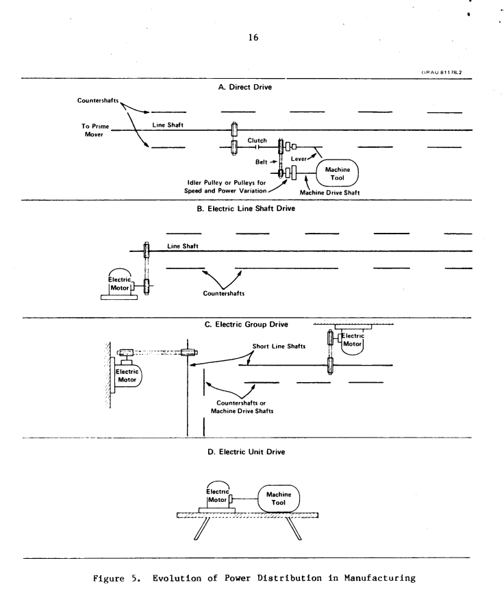
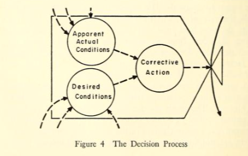
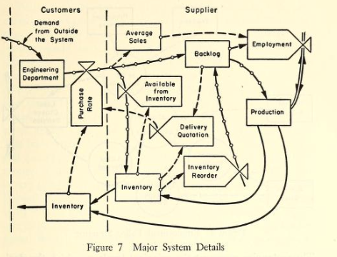

AI revolution in historical context
With daily announcements of new AI models achieving what seemed impossible a year ago, it’s easy to swing between two extremes: thinking it’s a fad or believing AI will instantly revolutionise everything. However, history shows that tech revolutions happen in stages. Their economic impact often lags behind inventions by decades. Right now, we’re missing many key elements, both technical and operational. AI’s transformative impact will unfold gradually, just like electricity’s did, and we’re still in the early stages. To realise its promise as the next economic engine, AI requires us to rethink our system of work. This reinvention will need many new products, inventions, and operational innovations beyond just developing AI models. I say this because we’ve been here before.
Faraday invented the dynamo in 1831. Electric power stations became commercially available in 1882. However, electricity did not significantly impact productivity for decades. In 1909, electricity made up only 25% of energy use in factories. It was not until the 1920s that electricity became the main power source in factories. Why did it take 40 years for electricity to make an impact on economic productivity and what can we learn from this today? You might have read that AI is the new electricity, let’s take this idea seriously.
We’ll first develop a three stage model of technological revolutions by examining the history of the second industrial revolution, specifically the transformation of factories by electricity, using a systems thinking approach. Next, I’ll use this model to argue that AI is currently at a similar stage to where electricity was when factories had just installed electric motors - we have achieved increased efficiency, but the real breakthroughs will come when we redesign the decision networks that drive our organisations. Finally, I’ll share my thoughts on what an AI native organisation might look like.
Part 1: Patterns of technological revolutions
How electricity transformed factories
Understanding how factories worked before electricity will help us fully appreciate how electricity transformed factories and why transformation is challenging despite the obvious advantages of new technology. The pre-electricity factory had many drawbacks that limited its productivity. The factory had three main parts: - a prime mover, often a steam engine that provided the energy - a system of shafts and belts to transfer the energy within the factory - machines attached to belts that performed the work.
The pace of every task and operation of all machines was determined by the shaft connected to the prime mover. Any failure in the shaft meant that the entire factory stopped functioning. Each machine ran to a fixed cadence set by the prime mover irrespective of the nature of the individual task. These drawbacks disappeared in the post electricity factory but this happened in stages.
Replacing the steam engine with an electrical motor as the prime mover was the natural first step, as electricity was cheaper than steam power and electrical motors were an obvious slot in replacement for steam engines. Cost reduction was the driving motive for this step, but there was no change in the production system itself. Factories considered electrical motors only as a source of energy production at this stage and since the cost of energy was a small fraction of the total cost of production, this change only had a marginal impact on productivity.
In the next stage, innovative firms realised that electrical motors could be used to control the distribution of energy in addition to generating the energy. This insight changed the narrative from cost reduction to gain in productivity. Factories replaced the single line shaft with the group drive system which consisted of multiple motors, each motor connected to a group of machines by smaller shafts and belts. This system had two advantages: each group operated independently at their own speed, schedule and there was no longer a single point of failure which increased productivity. Freed from the constraints of the line shaft, factories were able to create more efficient layouts. It became possible to organise factories into specialised shops and departments by groups of related machines that could be switched off when not in use further reducing costs. However, the core of the production system remained rooted in the constraints set by the system of belts and pulleys, not in the flexibilities offered by electrical motors.
Finally, engineers and managers took full advantage of the new capabilities of electricity to redesign factories from ground up. Since electricity made it possible to supply energy at any location with wires, the belts and pulleys disappeared, each machine was connected to an individual motor, the unit drive and electricity was supplied via wires to machine tools. Figure from Devine’s classic paper shows the evolution of the factory from shafts and belts to the unit drive through the intermediate stages.

Factory layout could now be redesigned according to the flow of materials rather than the constraints of line shafts and belts. With the unit drive, it became possible to precisely control machines with electrical throttlers and governors. Entirely new specialised machine tools like portable power tools and manufacturing techniques like electroplating were invented which were impossible before electricity. Factories were no longer dark, unsafe places as they had been due to the large overhead shafts, but could be lighter and airier. Factories were limited in size before electricity because of the cumbersomeness of shafts, but there were almost no limits to scale after electricity. Cumulatively, this led to a total transformation of factories and a step change in factory throughput.
In short, the factory before electricity was built around the constraints of distributing mechanical energy, electricity loosened these constraints, made it possible to control the amount of energy available to any desired location which was impossible with mechanical energy. This new capability led to a transformation of the factory, step change in throughput and led the second industrial revolution.
The three stages of technological revolutions
If we zoom out, we see the general pattern in how the systems of work are transformed in a technological revolution. The systems of work in any age are built around the constraints of the existing technology. The new technology loosens these constraints but the existing system of work persists until engineers and managers figure out ways to convert the potential of the new technology into superior commercial performance. Ultimately, the system is replaced by a new system that takes advantage of the new capabilities and flexibilities offered by the new technology. This replacement happens in three stages.
Stage one: Speedup of tasks with plug and play approaches. New technology is viewed as an efficiency provider for existing tasks with plug and play approaches. Firms view the new technology as an operational expense and see incremental gains.
Stage two: Subsystem redesign. Innovative firms begin to take advantage of the new possibilities offered by the technology by modifying the systems of work around the edges while retaining the core workflows. There are vigorous debates about the relative advantages of the old and new ways of working. The median firm continues to consider the new technology as an operational expense trying to make the best of existing capital investment and minimise disruption of existing workflows.
Stage three: Structure redesign from ground up: New technology brings workflows and tools that fully utilise its flexibilities and capabilities, replacing the old system. The electrical transformation of the factory needed both technological development and operational innovation. This included new technological items like motors, specialised machine tools, and updated factory layouts. Innovative companies invest in replacing old technology, while new firms adopt the latest technology right from the start. The rest of the companies only switch when faced with competitive pressure.
Progression through these stages is not automatic. It involves a struggle between the new technology’s expanded possibilities, financial and production capital, organisational dynamics, and the limits placed by society and government. Together, these factors create a path-dependent progression across different industries and regions.
If you know about systems thinking and leverage points, you’ll see that the first stage is the lowest leverage point. It changes constants and needs the least disruption. The second and third stages involve changes in structure and self-reorganisation, which have higher leverage. If you’re new to systems thinking, I recommend Donella Meadows’ Thinking in Systems: A Primer and the Unaccountability Machine by Dan Davies. They explore important ideas about organisational decision-making.
Part 2. Rewiring decision networks: Applying the electricity model to AI diffusion
AI at work: the missing ingredients
If we look at the present, we see we are still in the age of ‘shafts and belts’ regarding AI’s impact on work systems. Most uses of AI are in the early stage of change. Here, we replace old technology with faster new tools while keeping the workflow the same. Companies using generalist LLMs to create copy quickly show this trend. This is like when factories changed from steam engines to electric motors. They did this without changing how work was done. In this first stage, AI boosts individual productivity, but it won’t lead to a big change in overall productivity unless we redesign workflows.
AI and humans have different strengths and weaknesses. This difference opens new ways to organise work. We are moving into stage two of the AI revolution, where we delegate specific tasks to AI. AI can keep more context, communicate widely, and process information faster. In contrast, humans excel in judgement. Judgement means adjusting decisions based on new information. This ability goes beyond simple rules and formal policies.
By recognising our strengths and weaknesses, we can use AI as agents for certain tasks. These tasks don’t need high judgement but do need processing large amounts of information. I refer to agents in Alan Kay’s sense, as entities that “clone their users’ goals and then carry them out.” His paper discusses the use cases, like guidance and coaching, and the challenges, such as trust, of building effective agents from a user interface perspective back in 1989. Some functions, like customer service and software development, are beginning to redesign subsystems. They are experimenting with new workflows by delegating tasks to AI with human supervision. However, it’s still early days, and we haven’t yet changed our core organisational systems of work.
Drawing parallels with the electrical revolution, we still need the equivalents of unit drives, portable power tools, and redesigned factory layouts. I will share my thoughts on the structure and behaviour of AI-native organisations in the next few paragraphs. The topic of AI-native products will wait for another time, I recommend keeping an eye on tldraw, answer.ai, and the Foundation Interface Lab.
The coming transformation: reinventing decision networks
Before I discuss what an AI-native organisation might look like, let’s review our current work systems by taking a brief look at history. When computers first appeared, scientists began to envision intelligent organisations. Starting in the 1950s, thinkers like Jay Forrester modelled organisations as complex networks of information channels with feedback loops. Managers at key points made decisions to turn information into action, while computers processed data to enhance decision-making speed and quality. The figures below illustrate Forrester’s networks and the process of managerial decision-making, which come across quite modern. I refer to this network of information channels and decision-makers as a decision network.
Although the pioneers lacked the benefits of Moore’s law, machine learning, or AI that can communicate naturally, this framework remains powerful for analysing AI’s transformative potential. What decisions are taken, how are they taken, when are they taken and by whom? The structure of the decision network informs each one of these questions and AI will change the status quo for all of them.


AI will transform our current decision networks because it relaxes the constraints of individual and group decision making. Our current decision networks are the answer to the complexity of making interlinked decisions in volatile environments by large groups of people with limited information. We manage this complexity by various mechanisms like departmental boundaries and hierarchies, standard operating procedures, and an assortment of collaborative apps and processes. However, we are constrained by the information processing capacity of individual humans and the high coordination costs of group decision making.
Until now, it has been hard to teach AI tacit knowledge and institutional decision policies but with the recent AI models, that can efficiently process natural language, we can now embed our ways of working into AI models. Combined with their inherent strengths in speedily processing vast amounts of data and high communication bandwidth in natural and programming languages, AI models can lower the coordination costs of group decision making.
Our current networks of humans working together will eventually shift to a new system. This new system will involve humans and agents interacting with each other, focusing on optimal information flow instead of today’s functional hierarchies. This approach will respond better to changes in the environment and lead to faster, more effective decisions for organisations.
Decisions, especially collaborative decisions will be made and remade much faster than today where AI will be allowed to exert agency, and nontrivial fraction of work done by humans will involve managing AI agents. As a simplified example, consider the problem of product discovery, helping customers find the product that matches their needs. In most organisations, this problem is commonly distributed between multiple functions like advertising, visual merchandising, sales and marketing. A stage two organisation will delegate some of their advertising, or promotion campaign decisions to agents under human supervision and may account for the interdependency between advertising user journeys and promotion campaigns. A stage three company will ask entirely new questions.
The question will change from how to spend your advertising or promotions budget to how to divide your product discovery budget among advertising, promotions, and marketing. Instead of asking AI for the best discounts on certain SKUs, we will ask what overall goal you should set for your agents. The network of agents will adjust advertising campaigns, personalised promotions, and product recommendations to meet that goal. In short, stage three organisations will make decisions that were once impossible.
The stage three future of AI-native organisations won’t arrive right away. We’re not there yet, we need more inventions. However, waiting isn’t a good choice for any organisation in a competitive market. History shows that, like electricity, lasting competitive advantage will go to those who go beyond the first stage. They will reimagine their organisations around AI’s unique strengths.
Start by identifying repetitive, low judgement tasks and delegating them to AI agents under human supervision. Prepare for stage 3 by mapping out cross department decisions, uncovering the rate limiting steps, and asking what you would do differently if collaboration required just one tenth of the current effort and time. Begin cross departmental pilot projects that test AI driven decision making in a controlled way to learn what new structures might be required. The precise shape of AI native organisations can only be iteratively discovered, but we can be sure that when available net agency grows dramatically and cost effective intelligence supported by all relevant data can be brought to bear upon any information task, no matter how trivial or vital, we will work differently and do different work.
Thanks to Malavika and Simon for discussing early versions of this post.